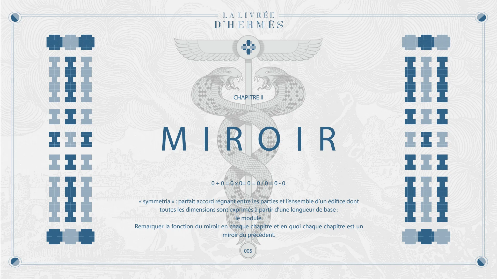
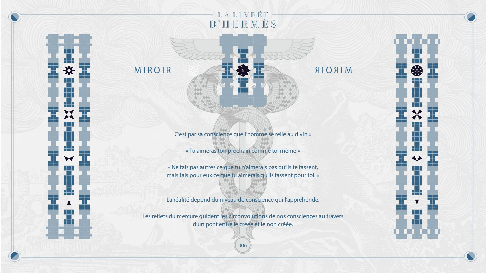
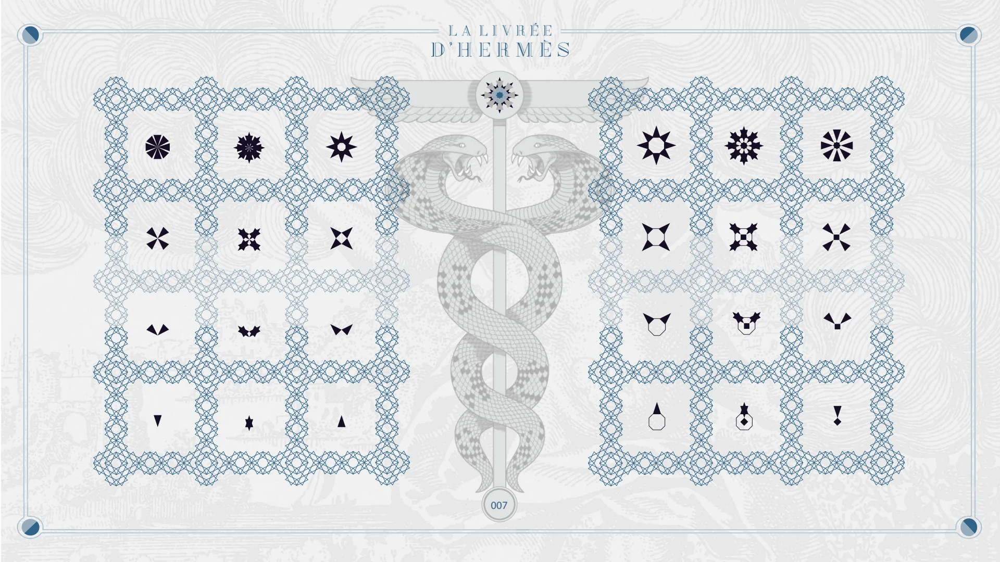
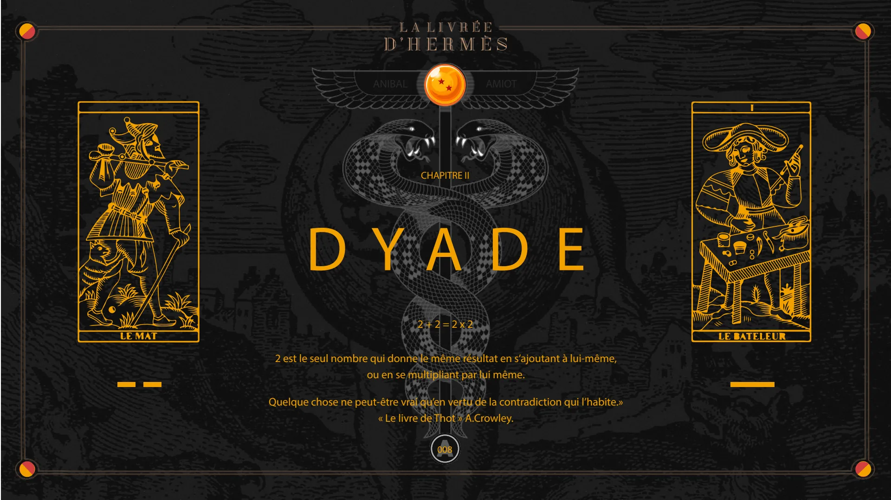
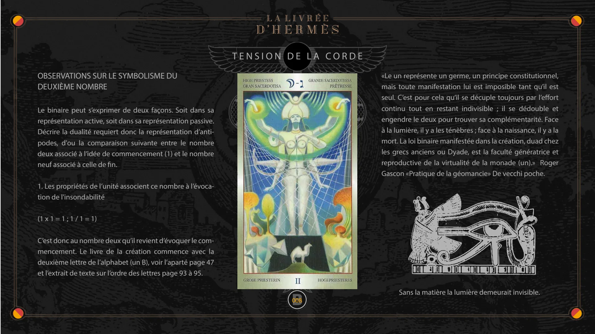
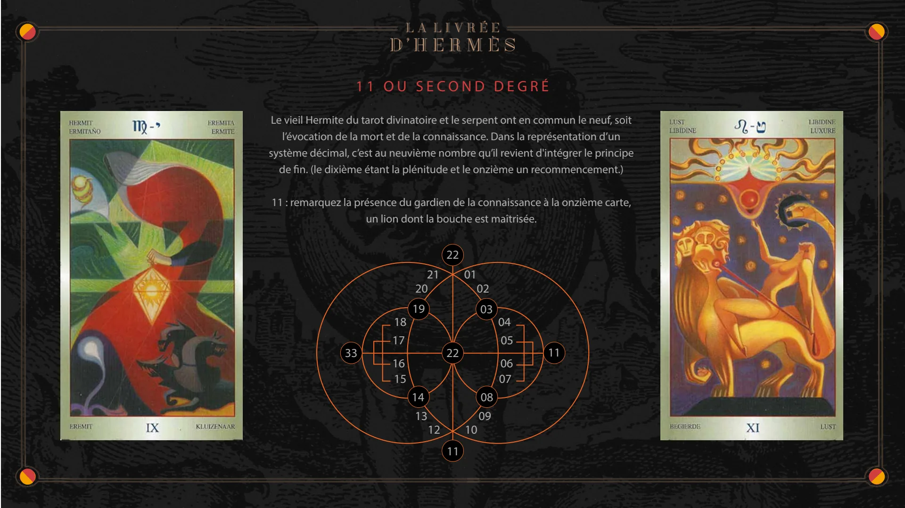

Chapitre II — Miroir, Dyade
Pages 005 à 008C du livre · chapitre 2 sur 8
Chapitre II de La Livrée d'Hermès : Miroir et Dyade. La symétrie, le deux qui donne le même résultat en s'ajoutant à lui-même ou en se multipliant par lui-même, et le symbolisme du deuxième nombre.

CHAPITRE II
MIROIR
0 + 0 = 0 x 0= 0 = 0 / 0 = 0 - 0
« symmetria » : parfait accord régnant entre les parties et l’ensemble d’un édifice dont toutes les dimensions sont exprimés à partir d’une longueur de base : le module. Remarquer la fonction du miroir en chaque chapitre et en quoi chaque chapitre est un miroir du précédent.
005

MIROIR
C’est par sa conscience que l’homme se relie au divin »
MIROIR
« Tu aimeras ton prochain comme toi même »
« Ne fais pas autres ce que tu n’aimerais pas qu’ils te fassent, mais fais pour eux ce que tu aimerais qu’ils fassent pour toi. »
La réalité dépend du niveau de conscience qui l’appréhende.
Les reflets du mercure guident les circonvolutions de nos consciences au travers d’un pont entre le créée et le non créée.
006

007

CHAPITRE II
DYADE
2 + 2 = 2 x 2
ANIBAL
AMIOT
2 est le seul nombre qui donne le même résultat en s’ajoutant à lui-même, ou en se multipliant par lui même.
Quelque chose ne peut-être vrai qu’en vertu de la contradiction qui l’habite.» « Le livre de Thot » A.Crowley.
A 008

TENSION DE LA CORDE
OBSERVATIONS SUR LE SYMBOLISME DU DEUXIÈME NOMBRE
Le binaire peut s’exprimer de deux façons. Soit dans sa représentation active, soit dans sa représentation passive. Décrire la dualité requiert donc la représentation d’antipodes, d'ou la comparaison suivante entre le nombre deux associé à l’idée de commencement (1) et le nombre neuf associé à celle de fin.
1. Les propriétés de l’unité associent ce nombre à l’évocation de l'insondabilité
(1 x 1 = 1 ; 1 / 1 = 1)
C’est donc au nombre deux qu’il revient d’évoquer le commencement. Le livre de la création commence avec la deuxième lettre de l’alphabet (un B), voir l’aparté page 47 et l’extrait de texte sur l’ordre des lettres page 93 à 95.
B 008
«Le un représente un germe, un principe constitutionnel, mais toute manifestation lui est imposible tant qu’il est seul. C’est pour cela qu’il se décuple toujours par l’effort continu tout en restant indivisible ; il se dédouble et engendre le deux pour trouver sa complémentarité. Face à la lumière, il y a les ténèbres ; face à la naissance, il y a la mort. La loi binaire manifestée dans la création, duad chez les grecs anciens ou Dyade, est la faculté génératrice et reproductive de la virtualité de la monade (un).» Roger Gascon «Pratique de la géomancie» De vecchi poche.
Sans la matière la lumière demeurait invisible.

11 OU SECOND DEGRÉ
Le vieil Hermite du tarot divinatoire et le serpent ont en commun le neuf, soit l’évocation de la mort et de la connaissance. Dans la représentation d’un système décimal, c’est au neuvième nombre qu’il revient d'intégrer le principe de fin. (le dixième étant la plénitude et le onzième un recommencement.)
11 : remarquez la présence du gardien de la connaissance à la onzième carte, un lion dont la bouche est maîtrisée.
33 18 17 16 15 21 20 19 14 13 12 22 22 11 01 02 03 10 08 09 04 05 06 07 11
© Anibal Edelberto Amiot. CC BY-NC 4.0 — creativecommons.org/licenses/by-nc/4.0 · DOI 10.5281/zenodo.22722485